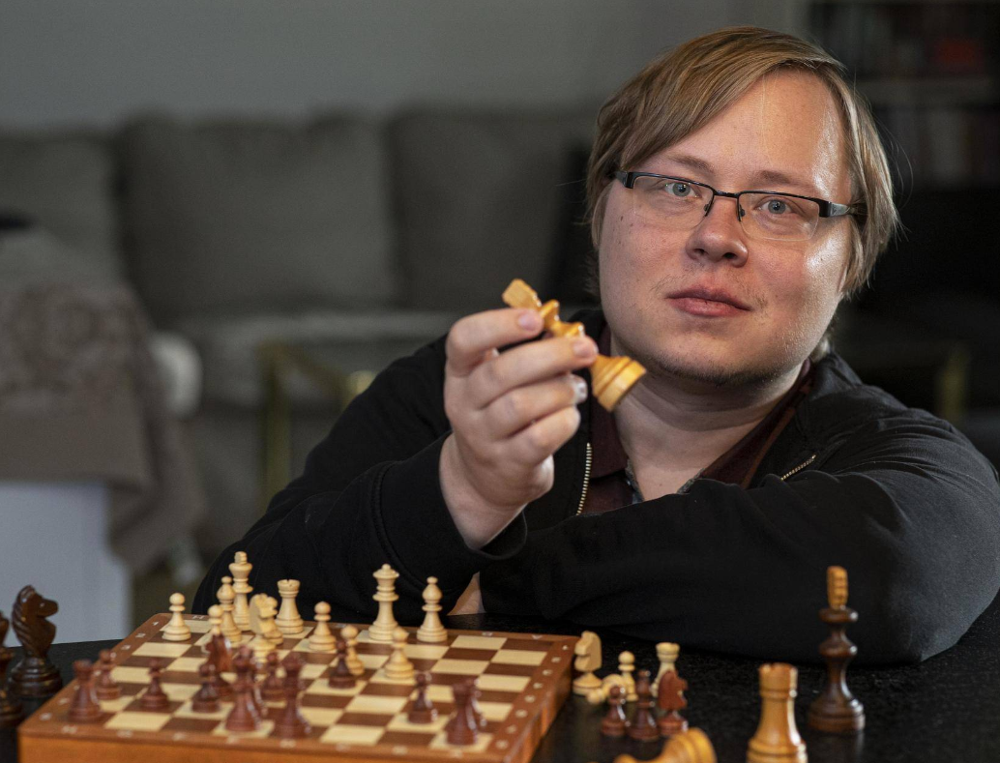

Tunnettuja shakinpelaajia
Valitse pelaaja vasemmasta valikosta lukeaksesi hänen esittelynsä.
Tomi Nybäck
Tomi Nybäck, GM, on suomalainen shakin suurmestari, joka on ollut Suomen korkeimmin sijoittunut pelaaja FIDE-rankingissa. Hän oli parhaimmillaan maailman 73. paras pelaaja (2009), ja hänen FIDE-pisteensä oli korkeimmillaan 2656.
Nybäck on yksi niitä harvoja pelaajia, joilla ns. plus-score Magnus Carlsenia vastaan (eli voittanut useammin kuin hävinnyt tälle).
Bobby Fischer
Bobby Fischer oli yhdysvaltalainen shakin maailmanmestari, joka voitti MM-ottelun...
Garry Kasparov
Garry Kasparov on venäläinen suurmestari, joka tunnetaan myös otteluistaan Deep Blue -tietokonetta vastaan...
Judit Polgár
Judit Polgária pidetään maailman parhaana naisshakinpelaajana, ja hän saavutti suurmestarin arvon vain 15-vuotiaana...